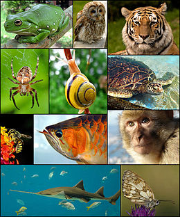

Твари́ни (лат. Animalia або Metazoa) — царство переважно багатоклітинних еукаріотичних (ядерних) організмів, однією з найголовніших ознак якого є гетеротрофність (тобто, споживання готових органічних речовин) та здатність активно рухатись. Однак тварини не завжди ведуть активний спосіб життя і є гетеротрофами. У клітинах тварин (як і інших еукаріотів) міститься сформоване ядро. До тварин належать ссавці, птахи, риби, комахи, павукоподібні, молюски, морські зірки, черви тощо. До царства тварин не належать рослини та гриби — теж великі (але не єдині) царства еукаріотів.
Тварини належать до еукаріотів (у клітинах є ядра). Класичними ознаками тварин вважаються: гетеротрофність (харчування готовими органічними сполуками) та здатність активно пересуватися. Втім, існує чимало тварин, що ведуть нерухомий спосіб життя, а гетеротрофність властива також грибам і деяким рослинам-паразитам.
